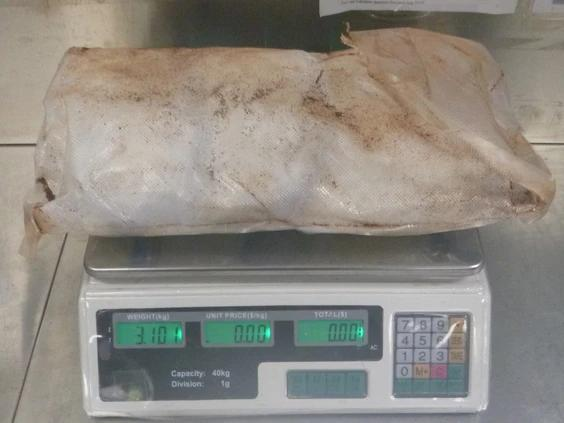

一名温哥华女子经斐济抵达澳洲布里斯班（Brisbane）后因携带14公斤冰毒（methamphetamine，冰毒）被捕，此外，一批从加拿大运往斐济（Fiji）的制毒设备及原料被当地警方查获。
据Postmedia报道，一批从卑诗省运往斐济（Fiji）的制毒设备被查获，当地警方正对此展开调查。斐济调查人员还在度假城市楠迪（Nadi）的一个仓库中发现了来自加拿大的制毒化学品原料和设备。
代理警察局长Juki Fong Chew称，考虑到这个太平洋岛国的冰毒危机，这次缉获行动“意义重大”。
登陆斐济的冰毒大多来自非法跨国犯罪组织，它们将被运往利润丰厚的澳洲和纽西兰市场。
来自卑诗省的设备是于7月12日被发现的，有6人被捕。
斐济警察局助理局长Mesake Waqa本周表示，“调查仍在继续，调查人员还在调查嫌疑人的财务历史，并正在听取制药公司的陈述。”
Postmedia最近前往斐济报道了国际帮派（包括卑诗省的一些帮派）导致冰毒成瘾激增的情况。
警察警长Seru Neiko当时表示，这个人口不足百万的国家“无法监管我们的边境，特别是我们的海上边境。毒品货物有可能被扔到海上，然后被拾起并进一步运往另一个目的地，这是我们无法仅凭自己拥有的资源进行管理的事情。”
他还表示，当地警方和海关截获了一批从2023年初开始，从低陆平原空运当地的冰毒（每件独立包裹重达1公斤）。
加拿大制毒设备及原料运往斐济被当地警方查获
斐济无毒品世界（Drug-Free World Fiji）创始人Kalesi Volatabu本周表示，制毒设备被没收事件令人不安，这表明外国有组织犯罪分子在斐济建立了秘密实验室。
Volatabu说：“这实际上告诉我他们有多复杂，以及这不是一夜之间发生的事情。”并指，这清楚地表明犯罪分子不仅在斐济，也包括其他岛屿拥有不同网络。
她说，像加拿大这样的富裕国家应该采取更多措施从源头解决这个问题。
卑诗骑警联邦严重及有组织犯罪组发言人赛义德(Arash Seyed)本周表示，他们还没有关于卑诗省实验室设备在斐济被发现的资讯。
加拿大边境服务局（Canada Border Services Agency，简称CBSA）表示，不会就是否有其他国家联系其协助调查一事发表评论。
发言人Luke Reimer在声明中说，“CBSA对进出加拿大的货物进行筛选，并透过使用风险管理的方法，来识别和拦截含有违禁品或透过犯罪获得的货物，支持打击有组织犯罪的努力。”
同时，一名温哥华女子于7月28日从斐济抵达澳洲布里斯班（Brisbane）后被捕，警方称其行李中含有14.4公斤冰毒。澳洲联邦警察的新闻稿中没有透露这名24岁女子的身份，她于周五（2日）出现在布里斯班地方法院。
这次逮捕促使斐济移民部长Pio Tikoduadua周五发表声明，称斐济与该女子保持距离，并指出她“是从加拿大温哥华开始旅程，行李从出发地托运到目的地。”
他说：“此案凸显了我们在打击非法毒品贸易方面面临的挑战，并凸显采取严格边境管制措施的必要性。”
澳洲警方的新闻稿称，冰毒是“装在塑胶包装中，包裹在浸有醋的毛巾内，并铺上咖啡豆”。
据称，“这些冰毒可能会在街头交易近145,000笔，估计价值1,340万元。”
侦查员威金斯（Steve Wiggins）表示，澳洲联邦警察和边境部队“阻止了大量冰毒进入我们的街道。”
图：澳洲警方提供
V6